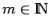
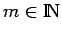

Inhalt Index DeskTop Bronstein

 Dynamische Systeme und Chaos Quantitative Beschreibung von Attraktoren Rekonstruktion der Dynamik aus Zeitreihen Grundlagen, Rekonstruktionen mit generischen Eigenschaften
Dynamische Systeme und Chaos Quantitative Beschreibung von Attraktoren Rekonstruktion der Dynamik aus Zeitreihen Grundlagen, Rekonstruktionen mit generischen Eigenschaften


Betrachtet wird ein dynamisches System  mit
mit  , generiert durch eine Abbildung (s. Strukturstabile zeitdiskrete Systeme,) oder ein Vektorfeld (s. Strukturstabile Differentialgleichungen. Eine C1-Funktion
, generiert durch eine Abbildung (s. Strukturstabile zeitdiskrete Systeme,) oder ein Vektorfeld (s. Strukturstabile Differentialgleichungen. Eine C1-Funktion  , genannt Meßfunktion, soll zur Rekonstruktion der Dynamik aus Messungen dienen. Da in der Praxis häufig nur zu diskreten Zeiten gemessen werden kann, erfolge dies zu den Zeiten , wobei eine feste Zeitverschiebung ist. Für  und heißt
, genannt Meßfunktion, soll zur Rekonstruktion der Dynamik aus Messungen dienen. Da in der Praxis häufig nur zu diskreten Zeiten gemessen werden kann, erfolge dies zu den Zeiten , wobei eine feste Zeitverschiebung ist. Für  und heißt
| (17.55) |
die zum Orbit mit  über die Meßfunktion h mit fester Zeitverschiebung gemessene Zeitreihe der Ordnung m in verzögerten (
über die Meßfunktion h mit fester Zeitverschiebung gemessene Zeitreihe der Ordnung m in verzögerten ( ) bzw. vorauseilenden () Koordinaten.
) bzw. vorauseilenden () Koordinaten.